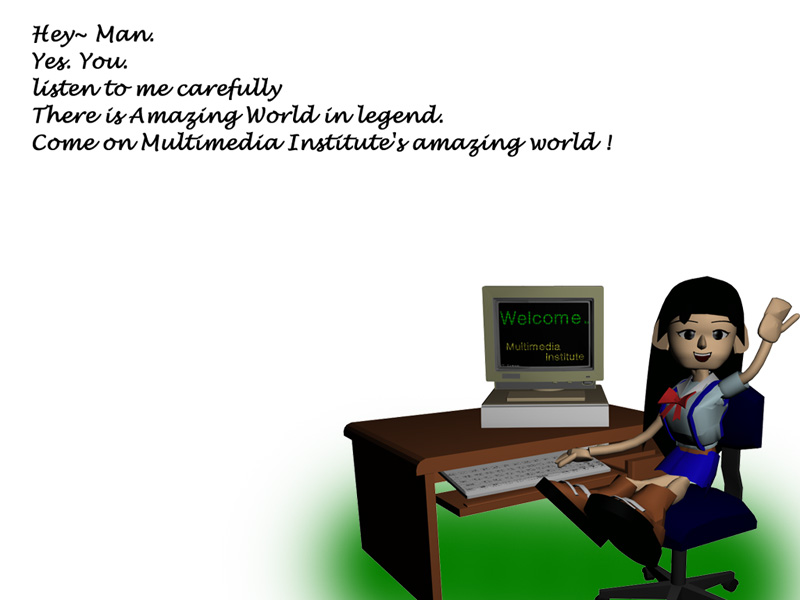

97 양병석 3D로 드디어 인간을 만들었습니다. 뭐.. 남들이 씹는걸 견뎌내며 어쨌든 만들었습니다. 3Dmax로 소녀의 얼굴을 대부분을 만들었구요. Poser에서 가슴부분, 다리, 발등 부분 발췌 에디트 하였습니다. 그리고, 3d cafe에서 컴퓨터와 책상, 의자를 가져왔구요. 마지막으로 포토샵에서 샤샤삭 에디팅
3D로 드디어 인간을 만들었습니다. 뭐.. 남들이 씹는걸 견뎌내며 어쨌든 만들었습니다. 3Dmax로 소녀의 얼굴을 대부분을 만들었구요. Poser에서 가슴부분, 다리, 발등 부분 발췌 에디트 하였습니다. 그리고, 3d cafe에서 컴퓨터와 책상, 의자를 가져왔구요. 마지막으로 포토샵에서 샤샤삭 에디팅